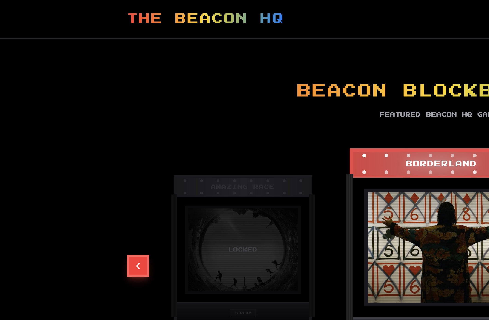
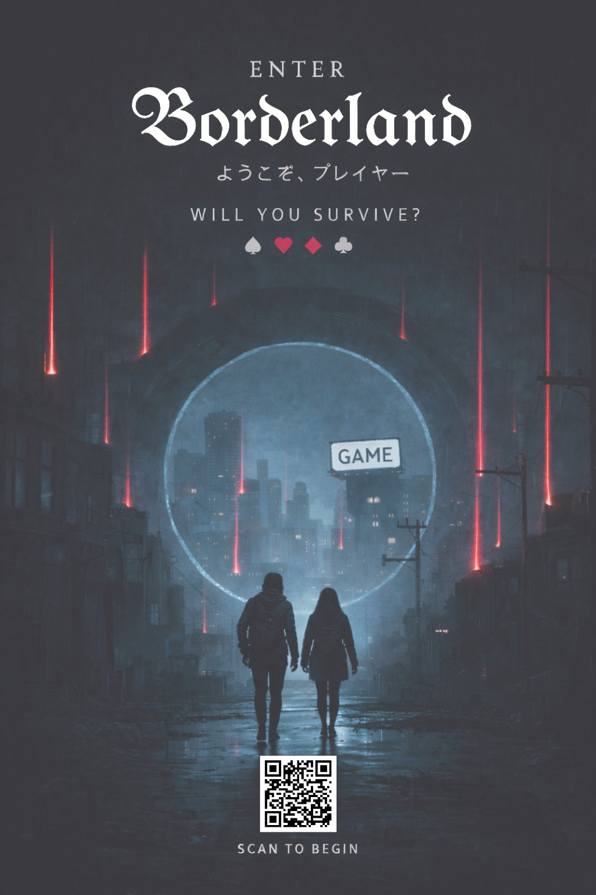
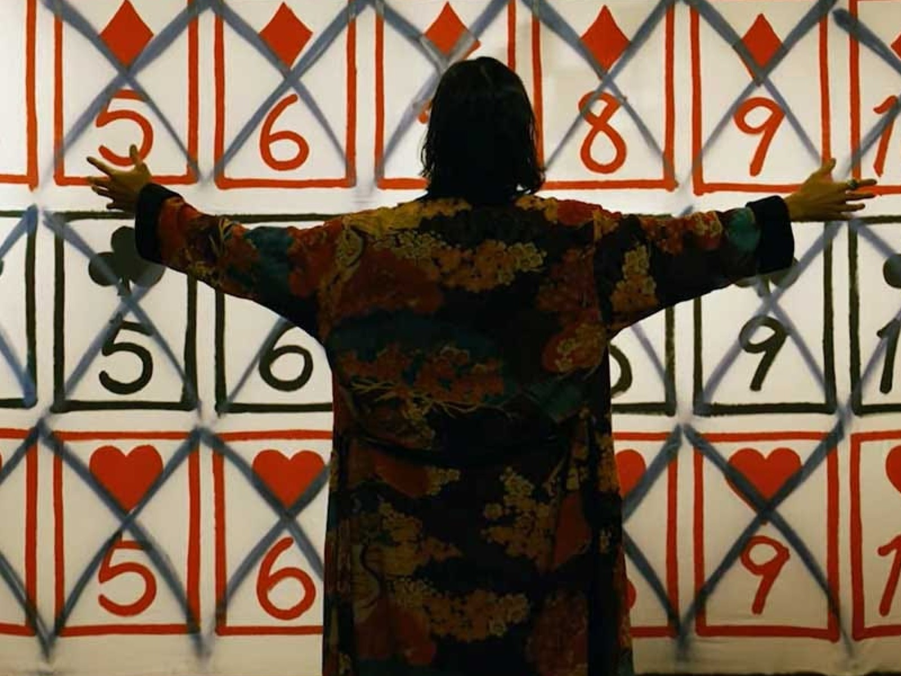
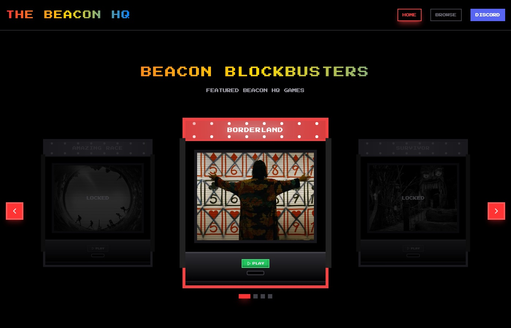
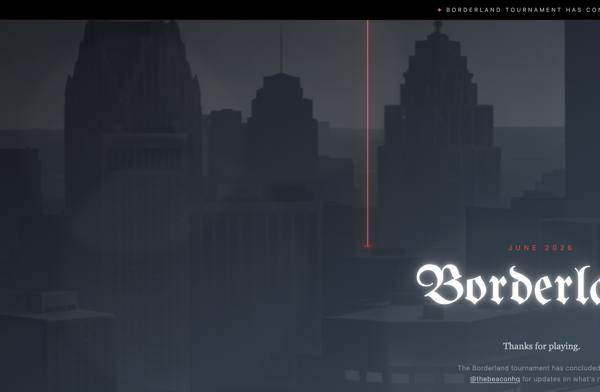
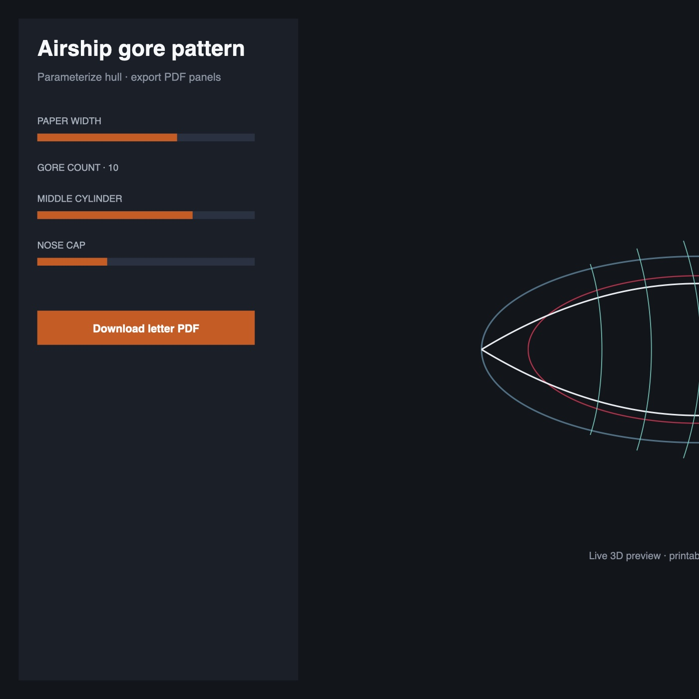
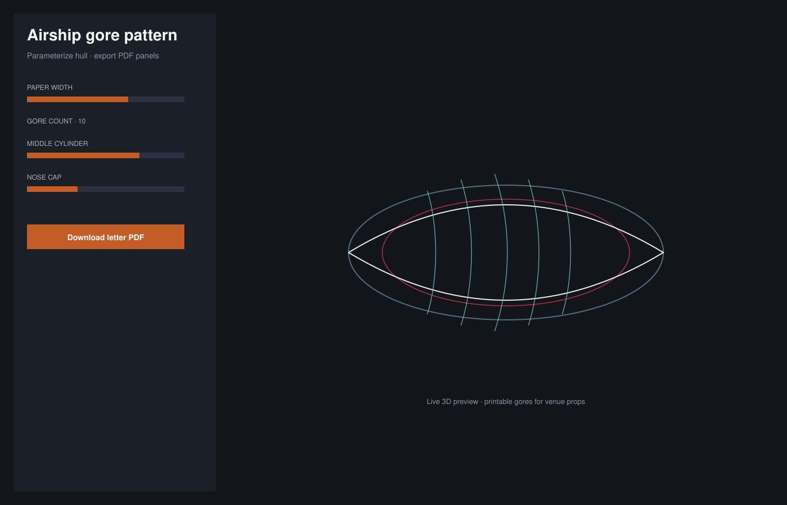

Participants from Movement Festival + street cards
Invitation cards distributed across Detroit
Multiplayer games shipped playable live
Prize pool on the tournament
Registered → checked-in show-up
Show-up lift from multi-channel reminders
Blended cost per participant
Visa holders who registered for an arena
* Working estimate — confirm against your own data before sharing widely.
Results
Borderland had to fill rooms in Detroit — games, visas, reminders, and street distribution pulling in the same direction.
| Metric | Detail | Context |
|---|---|---|
| 160+ | Participants acquired via Movement Festival + 1,000-card street campaign | Street cards and festival promo that produced real players |
| 16% | Card→participant conversion floor (160 / 1,000) from physical invites alone* | Rough efficiency of physical invites (*festival also drove signup) |
| 5 | Live multiplayer games (Breakpoint, Echo/Simon, Fetch, Zombie Hunt + suite) | Enough games to carry a multi-week season |
| 5 | Detroit venues in the suit schedule (Chroma → Tangent → Lincoln → Black Heart → Russell) | Running the same product across five city venues |
| 29 | Templated email variants in admin (arena × timing × registration state) | Keeping players on the calendar before each arena |
| 3 | Comms channels shipped: SMS + voice/voicemail + email | SMS, voice, and email when one channel wasn’t enough |
| $500+ | Prize pool advertised to drive competition | Stakes that made the tournament worth showing up for |
| 4 | Satellite systems: Crew, Brain, Finance, Discord Relay | Crew, knowledge, finance, and Discord around the event |
| ~75%* | registered → day-of checked-in show-up rate | Whether registered players actually checked in |
| ~2.1×* | show-up lift vs no multi-channel (SMS/email/voice) cadence | What the reminder stack bought in show-up |
| ~$6* | blended CAC per participant (print + festival time) | What it cost to bring one player into the city |
| ~45%* | share of visa holders who registered for ≥1 suit arena | Paid visas that still needed arena registration |
| ~30%* | players who returned for a second arena in the season | Players who came back for another suit |
| ~90%* | admin tasks handled in-dashboard vs ad-hoc spreadsheets | Work that stayed in the dashboard instead of spreadsheets |
| ~4h* | staff-hours saved per arena via check-in + projector tools | Staff time recovered at each arena |
Scale of the work
The challenge
The Beacon puts people face-to-face through hyperlocal live gaming. Borderland needed player narrative, live multiplayer software, payments, ops tooling, and physical go-to-market on the same clock — across multiple Detroit venues in one season.
My approach
As Software Engineer and Team Lead I treated Borderland like a product company inside an event: ship the player surface, ship the games, ship the admin ops that keep hundreds synchronized, then take distribution into the street. The constraint wasn’t “can we demo” — it was whether 160+ people would show up because SMS, email, visas, and cards all worked.

What shipped
Player & tournament platform
- Landing + suit path; Stripe visa/ticket checkout; returning-player + referral flows
- 5 live multiplayer games across suit arenas with Socket.IO play and venue projectors
- Admin: submissions, goals, pages, arenas, advantages, Twilio SMS, voice/voicemail, 29 email templates, settings
Satellites
- Call for Crew · Beacon Brain · Finance ledger · Discord Relay “The Stream”
- Parameterized airship design tool + physical model build
- Guerrilla GTM: 1,000 cards + Movement Festival (Hart Plaza)

How the system works
React + Vite on Vercel; Socket.IO live rooms (incl. Render workers); Stripe payments; Twilio SMS + voice; segmented email by arena timing and registration state; Turso for Brain/Finance/Stream. Season ran Clubs @ Chroma through Finale @ Russell (May–June 2026).


How the product works
Borderland moves people from Beacon HQ curiosity into visas, arenas, and day-of check-in — then keeps physical venue builds and satellite ops on the same clock as the software.
Surface 01
HQ arcade → Borderland entry
Goal: funnel players into the tournament product
The Beacon HQ arcade framed Borderland as the live blockbuster among locked titles. That carousel was the top of funnel: curiosity on the HQ site into the tournament product where visas, suits, and arena registration lived.

Surface 02
Landing & concluded season
Goal: narrative + conversion to follow / stay tuned
The Borderland landing carried Alice-in-Borderland-inspired narrative, suit path, prize stakes, and visa checkout while the season was live — then held the story after arenas closed so players and crew had a place to follow what came next instead of a dead URL.

Surface 03
Ops stack: email, SMS, voice
Goal: show-up ROI across five venues
Filling rooms meant more than a pretty landing. Admin ran 29 templated email variants (arena × timing × registration state), Twilio SMS, and voice/voicemail — the multi-channel cadence behind the ~2.1× show-up lift and ~75% registered→checked-in estimates. Venue posters above mapped the same season across Chroma, Tangent, Lincoln, Black Heart, and Russell.
Surface 04
Airship gore modeler
Goal: parameterize physical prop builds for venues
Clubs needed a physical airship, not just key art. The gore modeler takes hull parameters — paper width, gore count, taper — and exports PDF patterns for fabrication. Same tool that designed the prop could be opened on-site or handed to builders without redrawing panels by hand.


Surface 05
Call for crew & satellites
Goal: keep the org around the event productized
Borderland didn’t end at the player app. Call for Crew, Beacon Brain, Finance ledger, and Discord Relay (“The Stream”) sat as satellites so recruiting, knowledge, money, and live ops weren’t trapped in DMs and spreadsheets.
Four satellites around the tournament core — crew, brain, finance, Discord relay — plus street GTM (1,000 cards + Movement Festival) feeding the same funnel.
Reflection
Experiential products fail when software, ops, and street distribution are separate brains. 1,000 cards and festival promotion brought 160+ participants, on a stack that ran 5 games, payments, and multi-channel ops across 5 venues.